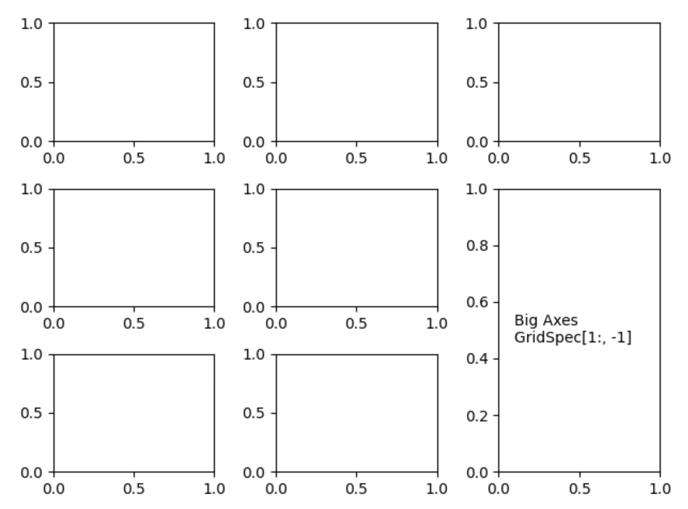
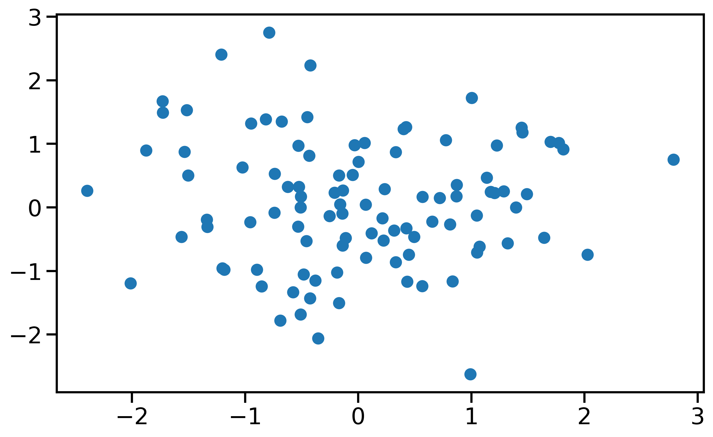
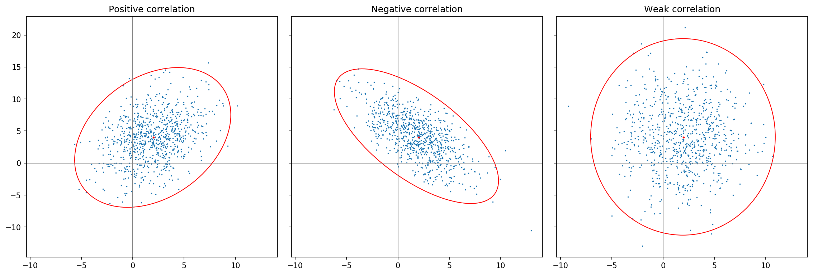
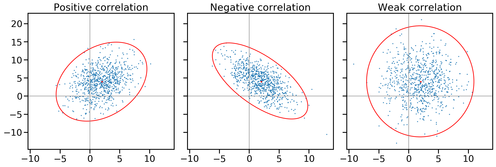
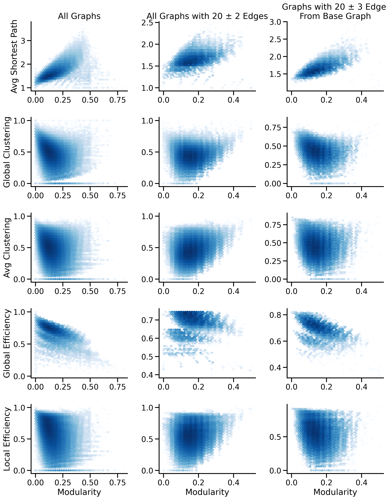
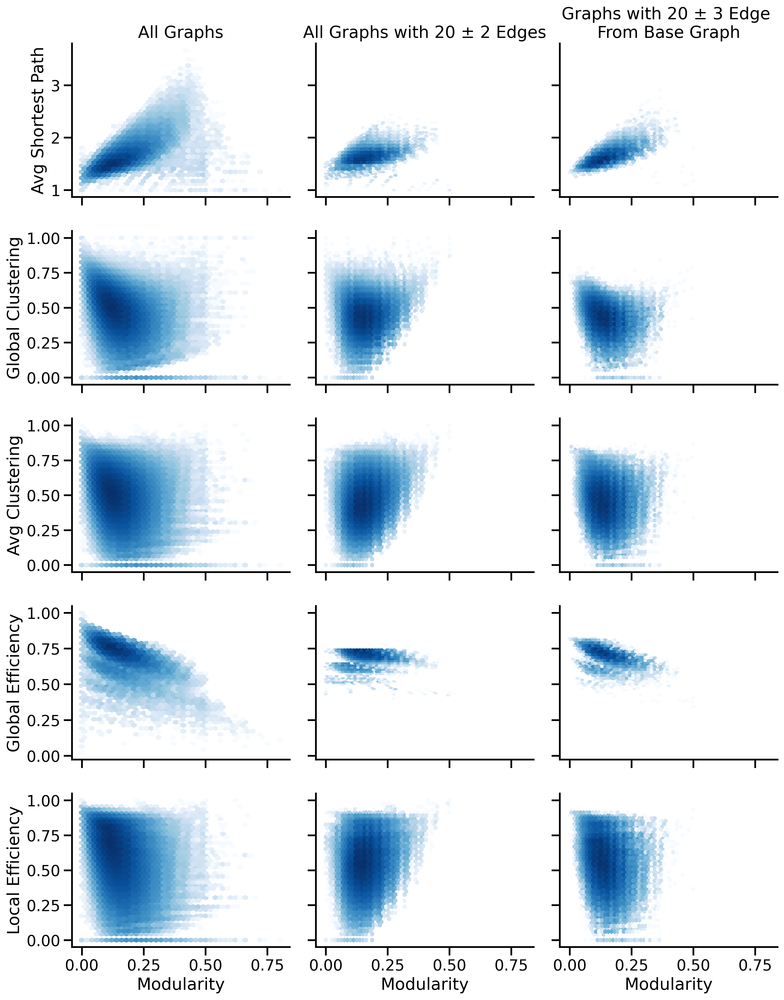
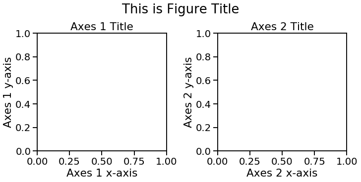
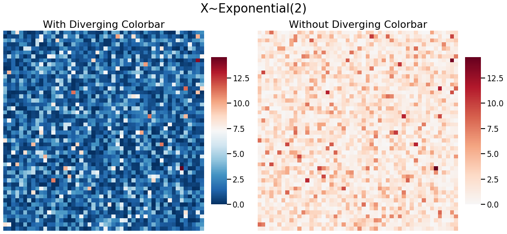
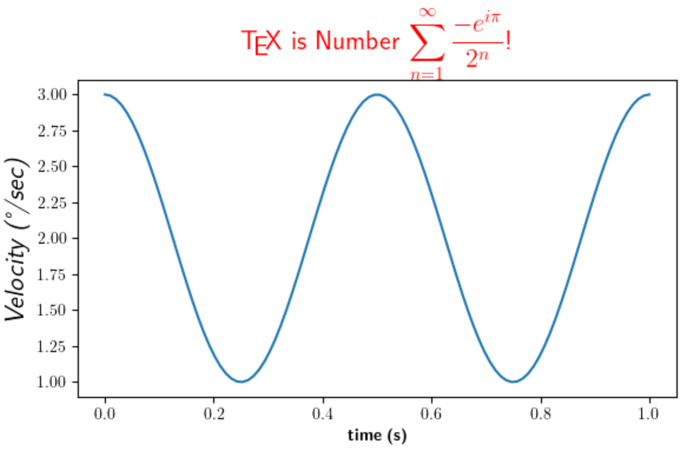

name:opening ## Making Better Figures in Python Jaewon Chung | Johns Hopkins University [Jupyter Notebook](https://nbviewer.jupyter.org/github/neurodata/talks/blob/master/making_figures.ipynb) <img src="images/neurodata_purple.png" style="height:250px; float:right;"/> <br><br><br><br><br><br><br><br><br><br> <!-- <img src="images/funding/jhu_bme_blue.png" STYLE="HEIGHT:95px;"/> --> .foot[[j1c@jhu.edu](mailto:j1c@jhu.edu) | <http://neurodata.io/talks/> | [@j1chung](https://twitter.com/j1chung)] --- ### Jovo's Checklist for Figures - Guidelines for how figures should look for publication - Cover code to help meet guidelines .footnote[Checklist Link = [Bits and Brains](https://bitsandbrains.io/2018/09/08/figures.html)] --- ### Matplotlib - Useful for making publication ready figures - Ultimate flexibility, difficult to learn - Documentation is lengthy .footnote[Talk Link = [neurodata.io/talks/making_figures.html](neurodata.io/talks/making_figures.html)] -- ### Seaborn - Built on top of Matplotlib - Many parameters are set - Handy functions for making figures look great .footnote[Talk Link = [neurodata.io/talks/making_figures.html](neurodata.io/talks/making_figures.html)] --- ### Anatomy of a Matplotlib Figure - Figure object : container for Axes objects - Axes object : container for all plotting elements, axis, etc. <div style="text-align:center"> <img src="images/making_figures/anatomy.png" style="height:400px; float:center;" /> </div> .footnote[Figure from [Matplotlib Tutorial](https://github.com/rougier/matplotlib-tutorial#figures-subplots-axes-and-ticks)] --- ### plt.subplots() - Utility wrapper for single and multipanel plots - Some useful arguments - figsize : Figure dimension (width, height) in inches. - nrows : # of rows of subplots - ncols : # of cols of subplots - constrained_layout : Removes as much empty space as possible between subplots - Returns a Figure object and array of Axes objects with shape (ncols, nrows) <br> <p style="text-align:center;font-size:33px"> fig, ax = plt.subplots(ncols=2, figsize=(10, 5), constrained_layout=True) </p> --- ### plt.subplots() <div style="text-align:center">  </div> .footnote[Figure from [Matplotlib Examples](https://matplotlib.org/gallery/subplots_axes_and_figures/gridspec_and_subplots.html#sphx-glr-gallery-subplots-axes-and-figures-gridspec-and-subplots-py)] --- ### Example Figure <p style="text-align:center;font-size:29px"> fig, ax = plt.subplots(figsize=(10, 6))<br> ax.scatter(X, Y) </p> <br> <div style="text-align:center">  </div> --- ### Text Legibility (#6) - Use seaborn's context manager - Automatically scales all font sizes <br><br><br> <p style="text-align:center;font-size:43px"> import seaborn as sns sns.set_context("talk") </p> --- ### Text Legibility (#6) Without seaborn's context <div style="text-align:center">  </div> --- ### Text Legibility (#6) With seaborn's context <div style="text-align:center">  </div> --- ### Multipanel plots - shared axis (#11) - Both x-axis and y-axis can be set to share the same range, ticks, and scale. - Can be set to "row", "col", or True (all axes objects share same range, ticks, and scale). - Helps comparisons when range might differ <br><br><br> <p style="text-align:center;font-size:30px">fig, axes = plt.subplots(ncols=2, nrows=2, sharey=True, sharex=True)</p> --- ### Multipanel plots - shared axis (#11) Without shared x and y-axis <div style="text-align:center">  </div> --- ### Multipanel plots - shared axis (#11) With shared x and row-wise shared y-axis <div style="text-align:center">  </div> --- ### Figure and Axis (#4 + #5) - ax.set_title("Insert Title Here") - title placed right above axes - fig.suptitle("Insert Title Here") - larger and placed above all axes titles - ax.set_xlabel("Insert Axis Label") - sets the x-axis label - ax.set_ylabel("Insert Axis Label") - sets the y-axis label -- <br> <div style="text-align:center">  </div> --- ### Color maps (#3) - Use diverging color bars only when appropriate - seaborn has "palette" or "cmap", matplotlib has "cmap" arguments - [List of colormaps ](https://matplotlib.org/tutorials/colors/colormaps.html) -- <div style="text-align:center">  </div> --- class: middle # .center[Other useful bits] --- ### Saving figures Use savefig() method in Figure object. Useful arguments: - bbox_inches='tight' - saves the tighest bounding box of the entire images - dpi=300 - default is 72, which is low - fname - end the file with desired <p style="text-align:center;font-size:35px">fig.savefig(fname="output.png", dpi=300, bbox_inches='tight')</p> --- ### Latex for Matplotlib - Can use latex for text if available on computer <br><br><br> <p style="text-align:center;font-size:35px"> import matplotlib<br> matplotlib.rcParams ['text.usetex'] = True </p> --- ### Latex for Matplotlib <br> <div style="text-align:center">  </div> .footnote[Figure from [Matplotlib Examples](https://matplotlib.org/gallery/text_labels_and_annotations/tex_demo.html)] --- ### Moving legends - Legends are placed within subplots by default - Legends can be moved outside - Shown in [Jupyter notebook](https://nbviewer.jupyter.org/github/neurodata/talks/blob/master/making_figures.ipynb) Example 1